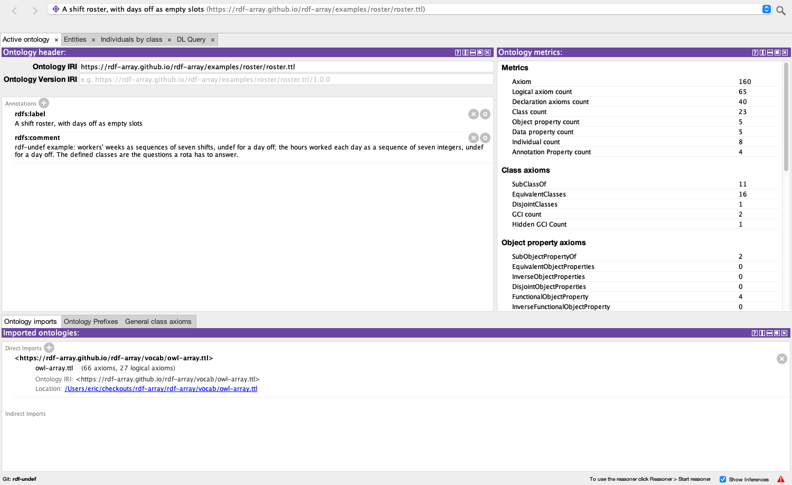
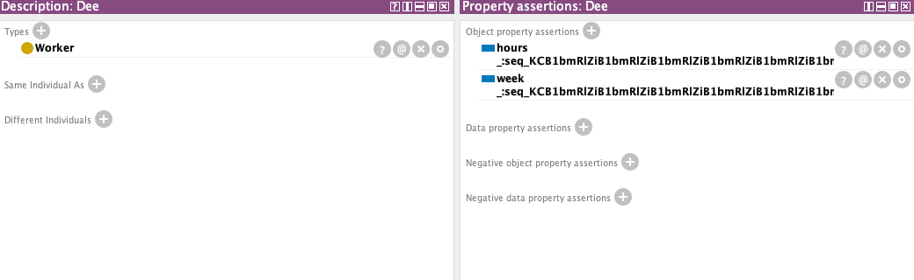
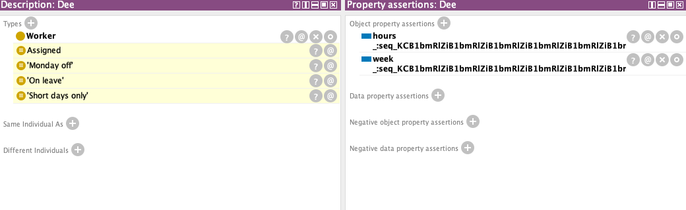
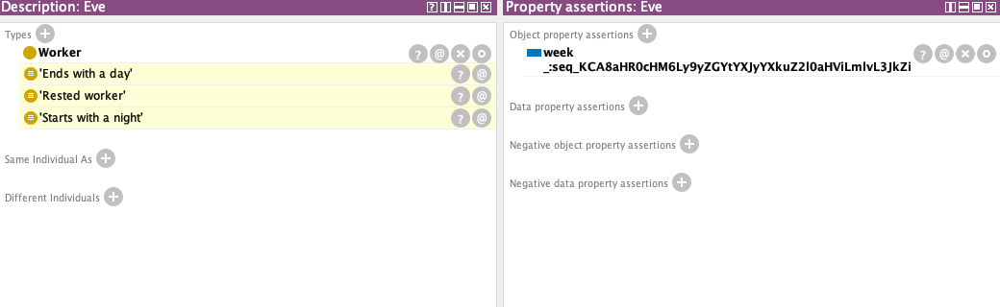
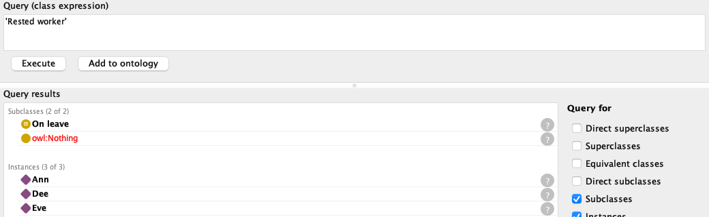
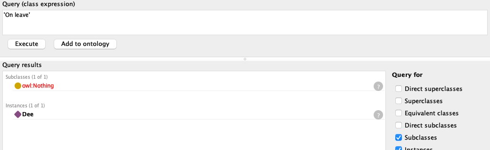
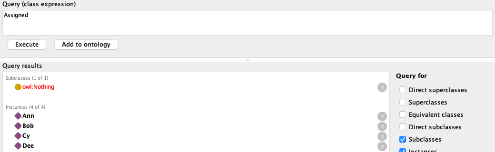
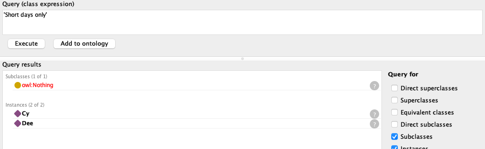

rdf-array · rdf-undef in Protégé · demo
Protégé reasons about days off
A week's roster is a list of seven shifts, and some days nothing is rostered. Written as ( :day undef :night undef undef :day :day ) and read as rdf-undef, the list is one term with three empty slots; OWL-array with rdf-undef's two built-ins gives the slot a meaning; Protégé 5.6.9, with one bundle swapped and one plugin added, counts the days off, tells a day off from a shift still to be decided, and knows that a week starting with a day off has no first shift. Protégé itself is not modified.
The data is rdf-array's roster example. The FHIR example of protege-array.md could not have shown this: FHIR's data model has no missing element, so its lists have no slots. A roster does, and the two ways of having nothing at a position, a slot and a blank node, are both in the data. Two jars make it run. owlapi-array's rdf-undef branch replaces Protégé's OWL API bundle under the same symbolic name and version; protege-owl-array's adds HermiT 1.4.3 (OWL-array) to the Reasoner menu, the bundled HermiT behind a decorator that hands it the meaning of each list, slots included. The screenshots are Protégé's own window, painted to PNG by the walk-through harness; its log is walkthrough.txt. Click a detail for the whole window.
1A slot is not a blank node
:dee :week ( undef undef undef undef undef undef undef ) . # on leave: nothing any day
:eve :week ( :night [ a :Shift ] :day undef undef :day :day ) . # Tuesday: a shift, not yet whichDee's week says that nothing is rostered on any day, and it is closed: there is nothing more to learn about it. Eve's Tuesday says that a shift is rostered and does not say which: a blank node, an unknown. rdf-undef.md §1 draws the line, and the reasoner keeps to it. "Every position decided", :week some (ra:member only {:day , :night}), is true of Dee, whose week has no members for only to check, and not of Eve, whose Tuesday could be any shift.
2What rdf-undef adds to OWL-array
Nothing changes in the semantics of a sequence but what a tuple's element may be: beside the individuals, data values and sequences, a distinguished hole, equal only to a hole. The built-ins of OWL-array keep their meaning, each stated over the elements that are individuals or values, so ra:member sees past a hole, ra:length counts it, and ra:first has no value when the first position is one. Two built-ins are added:
| Built-in | In every interpretation, for a sequence s |
|---|---|
ra:holes | functional: the number of empty slots of s itself, an xsd:nonNegativeInteger |
ra:DenseSequence | ra:Sequence and ra:holes value 0: no empty slot |
Two things the expansion learned to say (rdf-undef.md §4.2). An end that is a slot gets ra:first max 0 and ra:firstValue max 0: without it, HermiT read "a non-empty sequence has a first" together with "the members are day and night" and gave Bob's week a first shift in {day, night}. And that axiom of the vocabulary now speaks of dense sequences: under the old one, ( undef ), non-empty with no members, was inconsistent.
3Set it up
Git, Maven and a JDK 11 or newer. assemble.sh on the rdf-undef branch starts from the stock Protégé 5.6.9 zip and swaps in the two jars, built from source on the first run:
git clone -b rdf-undef https://github.com/rdf-array/protege-owl-array.git
git clone -b rdf-undef https://github.com/rdf-array/rdf-array.git
cd protege-owl-array
./assemble.sh Protege-5.6.9-rdf-undef
JAVA_HOME=$(/usr/libexec/java_home -v 21) \
Protege-5.6.9-rdf-undef/run.sh ../rdf-array/examples/roster/roster.ttlThe java_home line is macOS; elsewhere set JAVA_HOME to any JDK 11 or newer. roster.ttl imports the OWL-array vocabulary, whose rdf-undef version declares ra:holes and ra:DenseSequence so that the DL Query tab knows the names; catalog-v001.xml maps the import to the file beside it.
4Open it; every list is parsed
Protégé opens roster.ttl and its import: 2 ontologies, 160 axioms, no triple left unparsed, 9 distinct sequence terms in 10 axioms.

roster.ttl.Dee before reasoning: her week and hours are equal sequences, so one individual, which Protégé displays as ( undef undef undef undef undef undef undef ).

week and hours are sequence terms, and the same one. Whole window5Start the reasoner
Reasoner ▸ HermiT 1.4.3 (OWL-array) ▸ Start reasoner: two seconds, consistent. Dee's inferred types, in yellow: 'Monday off', 'On leave' and 'Short days only' in the Description view, which shows the most specific ones; 'Rested worker' and Assigned are in the log's full list.

Eve: 'Ends with a day', 'Rested worker', 'Starts with a night' ('Night worker' follows from the last); not Assigned.

6Ask the DL Query tab
Days off: ra:holes

:week some (ra:holes some xsd:nonNegativeInteger[>= 2]). Whole windowA week of days off is not an empty week

ra:length value 7 and ra:holes value 7. ra:EmptySequence lists nobody. Whole windowA slot is closed, a blank node is open

:week some (ra:member only {:day , :night}): Dee yes, Eve no. Whole windowNo first shift: ra:first at a slot
:week some (ra:first max 0 and not ra:EmptySequence): Bob's week starts with undef. Whole windowonly is vacuous at a slot

:hours some (ra:memberValue only xsd:integer[<= 8]): Dee worked no hours, and every one of them was short. Whole windowAll 23 queries of walkthrough.tsv list in the tab the instances that HermiT finds through the OWL API; the table is §3 of the example.
7Limits, as found
- ELK sees no counts. ELK 0.6.0 (OWL-array) answers 2 of the 23 queries as expected: ELK has no datatypes, so
ra:length,ra:holesandra:DenseSequence(which isra:holes value 0) are out of its reach;onlyandmax 0are outside OWL 2 EL; and it skips Eve's week, which holds a blank node, sora:member some :Nightandra:last some :Daylist everyone but her. - Saving round-trips as Turtle, not as RDF/XML. The harness saves
roster.ttlas Turtle and reads it back with the same axioms; RDF/XML refuses, naming the sequence:rdf:parseType="Collection"holds node elements only, and a slot is none (#18 was the literal element). - A sequence is written out in the editor, not yet in a Manchester file. owlapi-array's object renderer writes
( day undef night … ), and its parser reads that back; a saved Manchester document keeps the reversible_:seq_…node ID. - The inner positions are invisible to the reasoner. The expansion tells
( 1 undef )from( undef 1 )by the ends and from( 1 2 )by the count of holes, but not( 1 undef 2 3 )from( 1 2 undef 3 ), as it did not tell( 1 2 3 4 )from( 1 3 2 4 )before: sound and incomplete forowl:differentFrom. - No
HasKeyfor identity underowl:sameAsof elements, on either branch; with slots it would be one key per length and pattern of holes.